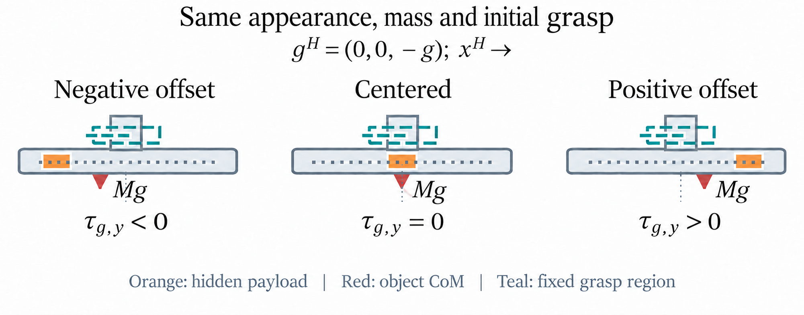
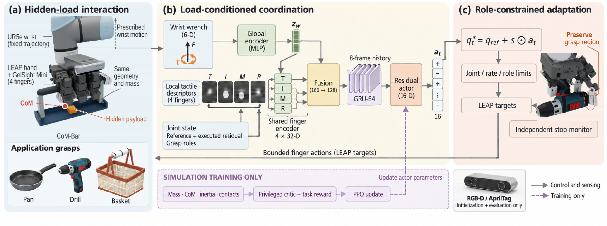
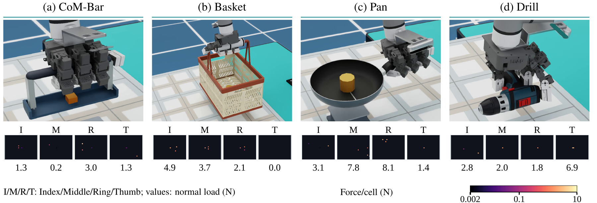
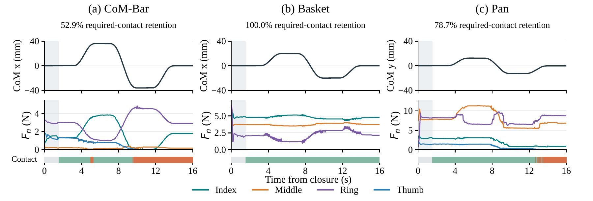
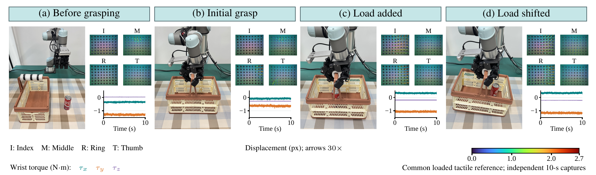

DynamicDex: Contact-Aware Dexterous Grasping under Hidden Load Shifts

Abstract
Hidden mass redistribution changes the support required from a dexterous grasp even when object geometry and total mass remain unchanged. DynamicDex combines global wrist loading with local tactile history to generate bounded residuals around an established grasp. With a fixed wrist, moving-load pose success increases from 80% to 100% and mean squared normalized joint torque is approximately 40% lower than fixed-grasp control. Physical Basket grasps achieve 90% static-load and 80% moving-load success. Contact continuity is reported separately from pose recovery.
Method Overview
DynamicDex encodes wrist wrench and gravity globally, combines four local tactile descriptors with proprioception and role signals, and processes an eight-frame causal history. The actor produces 16 joint residuals that are projected through reference, joint-limit, and rate bounds; privileged object state is used only by the training critic.

Simulation Results
DynamicDex reaches 90/90 moving-load successes with a fixed wrist, compared with 72/90 for fixed-grasp control. The 18 additional successes all occur on Basket (30/30 versus 12/30). Admittance-wrist evaluation gives 84/90 successes for DynamicDex versus 75/90 for fixed grasp; Grip-4D also gives 84/90. Contact continuity remains a separate outcome from pose recovery.

\n
\nDemonstration videos
Four common-Home simulation recordings show approach, closure, payload motion, and hold. These presentation traces are separate from the formal 1,395-trial controller evaluation.
\nFour-Case Tactile Replays
Each self-contained viewer provides a play button and time slider. RGB, four tactile panels, payload/CoM state, phase, and wrench values update packet by packet. Tactile images are optical marker/deformation overlays, not calibrated force maps.
Real-World Results
Physical validation uses DynamicDex Full-16 with wrist admittance on Basket. Contact retention and peak rotation are means of trial-level metrics within each condition.
| Condition | Success | Mean retention | Mean peak rotation |
|---|---|---|---|
| Static load (N=10) | 9/10 (90%) | 95.0% | 4.2° |
| Moving load (N=5) | 4/5 (80%) | 85.0% | 8.6° |

Paper and Data
The 15-trial physical aggregate and independent 10-second sensor captures are separate evidence sets. Individual logs for the aggregate were not supplied; the table reports author-confirmed group means.